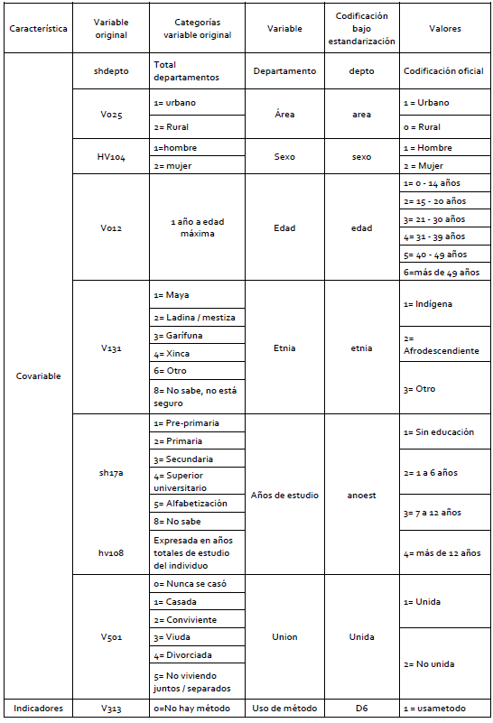
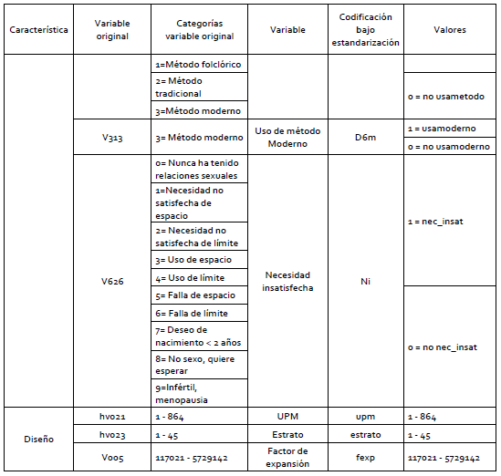

Estimación de uso de métodos de planificación familiar empleando modelos de unidad
CEPAL - Unidad de Estadísticas Sociales
Introducción
Para los gobiernos y las organizaciones internacionales es muy importante conocer las condiciones de calidad de vida de las personas en lo que incluye la salud, por lo cual, evaluar la capacidad que estas tienen para cubrir sus necesidades de planificación familiar y de acceso a diferentes métodos modernos de planificicación; es fundamental para el diseño y formulación de políticas públicas. Por esta razón, el realizar mapas de uso de métodos de planificación familiar mediante metodologías adecuadas que permitan llegar a estimaciones precisas, se convierte en una herramienta preciada para identificar no solamente las áreas geográficas más vulnerables en términos salud sexual y reproductiva (departamentos, regiones, municipios, provincias, comunas o la división geográfica característica de cada país) sino también la situación de grupos o segmentos poblacionales de interés.
Definiciones de los indicadores de interés.
Indicador D6 métodos de planificación
Este indicador, alude a la tasa de prevalencia de uso de métodos anticonceptivos de mujeres sin importar el tipo de método ya sea moderno, tradicional o folclórico, la cual se compone por mujeres en edad fértil (entre 15 y 49 años) y sexualmente activas
Indicador D6m métodos modernos de planificación
Este indicador, corresponde a la tasa de prevalencia que hace referencia al uso de métodos anticonceptivos de tipo moderno. la cual se compone por mujeres por mujeres en edad fértil (entre 15 y 49 años), sexualmente activas que hacen uso de algún método de tipo moderno.
Indicador NI necesidades insatisfechas
La definición de este indicador, se entiende como la tasa de prevalencia de mujeres en edad de procrear que por algún motivo no son capaces de cubrir sus necesidades de planificación familiar con algún método anticonceptivo (moderno o tradicional). Esta se compone, por mujeres en edad fértil (entre 15 a 49 años), sexualmente activas y/o unidas que afirma no ser capaces de cubrir sus necesidades de planificación familiar con algún método anticonceptivo (tradicional y/o modernos)
D7 (junto con necesidades insatisfechas)
Este indicador, hace referencia a la proporción de mujeres en edad de procrear (15 a 49 años), sexualmente activas y/o unidas que han decidido por voluntad propia no tener hijos (adicionales) o posponer su siguiente hijo y para ello se encuentran utilizando métodos anticonceptivos modernos.
Modelo MRP
De acuerdo con este modelo, como lo expone Gutiérrez y otros (2022), la probabilidad de hacer uso de métodos de planificación para la \(i\)-ésima persona en el \(j\)-ésimo post-estrato, puede ser definido para cada unidad de la encuesta. El modelo pretende establecer la relación entre la expectativa \(\rho_{di}\) de la variable dicotómica con las covariables de información auxiliar disponibles para ser incluidas. El procedimiento correspondiente a este proceso, modela el logaritmo del cociente entre la probabilidad de usar algún método anticonceptivo a su complemento en relación al conjunto de covariables a nivel de unidad, \(x_{ji}\), y el efecto aleatorio, \(u_d\)
\[ \ln(\frac{ρ_{ji}}{1-ρ_{ji}} ) = x_{ji}^t \beta + u_d. \]
Los coeficientes \(\beta\) hacen referencia a los efectos aleatorios de las variables \(x_{ji}^t\) sobre las probabilidades de que la \(i\)-ésima persona haga uso de métodos anticonceptivos y \(u_d \sim N(0,\sigma^2_u)\).
\[ \begin{eqnarray*} \beta & \sim & N(0,100) \\ \sigma^2_u & \sim & IG(0.00001,0.00001) \end{eqnarray*} \]
Estandarización de la encuesta
Se presentan las variables provenientes de la Encuesta Nacional de Salud Materno Infantil (ENSMI), que fueron empleadas para la construcción de los datos que son utilizadas en este estudio e incluidas en el ajuste del modelo.
Covariables
Indicadores

El indicador de necesidades satisfechas de planificación por métodos modernos (D7) no se crea a partir de las variables originales de la encuesta, ya que es una razón entre los otros tres indicadores creados
Variables para el diseño muestral
Unidad primaria de muestreo - UPM
Para la definifición de esta variable, se emplea la variable original de la encuesta “hv021”.
Estrato
Para la definifición de esta variable, se emplea la variable original de la encuesta “hv023”.
Factor de expansión - fexp
El factor de expansión para el cual se emplea la variable original “V005” el cual requiere que al valor de la variable se le multiplique una constante (4.641.986) la cual hace referencia al número de mujeres en edad fértil; y, a ese valor se divide por la suma de la variable(V005).
La tabla resultante se muestra en la siguiente tabla.
encuesta_mrp <- readRDS("UNFPA/D6/encuesta_mrp.rds")
tba(encuesta_mrp %>% head(10))| depto | usametodo | usamoderno | necesInst | area | edad | etnia | unida | anoest | upm | estrato | fexp | pobreza |
|---|---|---|---|---|---|---|---|---|---|---|---|---|
| 01 | 0 | 0 | 1 | 1 | 5 | 3 | 2 | 4 | 1 | 1 | 186.2119 | 0 |
| 01 | 0 | 0 | 0 | 1 | 2 | 3 | 2 | 3 | 1 | 1 | 186.2119 | 0 |
| 01 | 0 | 0 | 0 | 1 | 2 | 3 | 2 | 4 | 1 | 1 | 186.2119 | 0 |
| 01 | 0 | 0 | 0 | 1 | 5 | 3 | 2 | 3 | 1 | 1 | 186.2119 | 0 |
| 01 | 0 | 0 | 0 | 1 | 3 | 3 | 1 | 3 | 1 | 1 | 186.2119 | 0 |
| 01 | 0 | 0 | 0 | 1 | 5 | 3 | 1 | 4 | 1 | 1 | 186.2119 | 0 |
| 01 | 1 | 1 | 0 | 1 | 3 | 3 | 1 | 3 | 1 | 1 | 186.2119 | 1 |
| 01 | 1 | 1 | 0 | 1 | 5 | 3 | 2 | 1 | 1 | 1 | 186.2119 | 1 |
| 01 | 1 | 1 | 0 | 1 | 3 | 3 | 2 | 4 | 1 | 1 | 186.2119 | 1 |
| 01 | 0 | 0 | 0 | 1 | 5 | 3 | 1 | 4 | 1 | 1 | 186.2119 | 0 |
Censos de población y vivienda
Es necesario definir las variables del país con los que se desea trabajar. De acuerdo a esto, como primer paso se debe tener acceso al censo del país, para ello puede acceder desde el siguiente enlace https://redatam.org/en/microdata en el cual dispondrá de un archivo .zip con los microdatos del país. Ahora bien, para leer el conjunto de datos, es necesario emplear la función redatam.open de la librería redatam, la cual depende directamente del diccionario censal del software REDATAM, este es un archivo con extensión dicx y que debe encontrarse en la carpeta sobre los datos que se están leyendo. Así, es como se crea un objeto dentro de R que hace la respectiva unión del diccionario con los microdatos de la base de datos censal. La siguiente sintaxis muestra la lectura del diccionario en R y los cálculos iniciales
library(redatam)
guatemala <- redatam.open( "UNFPA/D6/Data/cpv2018gtm-cde.dicx")
CONTEOS <- redatam.query(guatemala, "freq DEPTO.IDEPTO
by VIVIENDA.PLG11
by PERSONA.PCP7
by PERSONA.PCP6
by PERSONA.ANEDUCA
by PERSONA.PCP34
by PERSONA.PBLOPER",tot.omit = FALSE)
# Eliminando totales de la tabla
CONTEOS2 <- CONTEOS %>% filter_at(vars(matches("_label")),all_vars(. != "__tot__"))
#### elimando las edades menores a 10 años
CONTEOS2 <- CONTEOS2 %>% filter(PCP73_value >= 10)Después de realizar algunas validaciones se estandarizan las variables como muestra el siguiente código.
censo_mrp <- CONTEOS2 %>% transmute(
depto = str_pad(
string = IDEPTO1_value,
width = 2,
pad = "0"
),
area = case_when(PLG112_value == 1 ~ "1", # 1 = Urbana
TRUE ~ "0"),
# 0 = Rural
sexo = as.character(PCP64_value),
edad = case_when(
PCP73_value %in% 0:14 ~ "1", # 0 a 14
PCP73_value %in% 15:20 ~ "2", # 15 a 20
PCP73_value %in% 21:30 ~ "3", # 21 a 30
PCP73_value %in% 31:39 ~ "4", # 31 a 39
PCP73_value %in% 40:49 ~ "5", # 40 a 49
TRUE ~ "6" # 50 o mas
),
anoest = case_when(
is.na(ANEDUCA5_value) | PCP73_value < 7 ~ "98", # No aplica
ANEDUCA5_value == 99 ~ "99", #NS/NR
ANEDUCA5_value %in% 0 ~ "1", # Sin educacion
ANEDUCA5_value %in% c(1:6) ~ "2", # 1-6
ANEDUCA5_value %in% c(7:12) ~ "3", # 7-12
ANEDUCA5_value > 12 ~ "4" , # 12 o mas
TRUE ~ "Error"
),
etnia = case_when(
PBLOPER7_value %in% c(2:3) ~ "2", # Afro
PBLOPER7_value == 1 ~ "1", # Indigena,
TRUE ~ "3" # Otro
),
unida = case_when(
PCP346_value %in% c(2:3) ~ "1",# Unido
TRUE ~ "2" # Otro
),
value
) %>% group_by(depto, area, etnia, sexo, edad, anoest, unida) %>%
summarise(n = sum(value), .groups = "drop")La tabla resultante se muestra en la siguiente tabla.
censo_mrp <- readRDS("UNFPA/D6/censo_mrp.rds")
tba(censo_mrp %>% head(10))| depto | area | etnia | sexo | edad | anoest | unida | n |
|---|---|---|---|---|---|---|---|
| 01 | 0 | 1 | 2 | 2 | 1 | 1 | 157 |
| 01 | 0 | 1 | 2 | 2 | 1 | 2 | 536 |
| 01 | 0 | 1 | 2 | 2 | 2 | 1 | 1006 |
| 01 | 0 | 1 | 2 | 2 | 2 | 2 | 4588 |
| 01 | 0 | 1 | 2 | 2 | 3 | 1 | 333 |
| 01 | 0 | 1 | 2 | 2 | 3 | 2 | 3085 |
| 01 | 0 | 1 | 2 | 2 | 4 | 1 | 9 |
| 01 | 0 | 1 | 2 | 2 | 4 | 2 | 41 |
| 01 | 0 | 1 | 2 | 3 | 1 | 1 | 2025 |
| 01 | 0 | 1 | 2 | 3 | 1 | 2 | 877 |
Imagenes satelitales como información auxiliar
En la actualidad los datos satelitales que se usan para los diferentes estudios realizados por CEPAL, se obtienen de la plataforma Google Earth Engine ; la cual, integra diferentes lenguajes de programación como Javascript, Python y R mediante el paquete rgee, recientemente vinculado (2021). Todas estas herramientas juntas, permiten obtener imágenes satelitales de los lugares de interés para integrar a la información que ya se tiene disponible y así mejorar la calidad de las estimaciones.
La información satelital empleada para el calculo de los indicadores es la siguiente:
Luces nocturnas
En su nombre original “Nighttime Lights Time Series Version 4, Defense Meteorological Program Operational Linescan System”. Este es un sistema de datos de uso público, recopilados por la Agencia Meteorológica de la Fuerza Aérea de EE. UU. Pero el procesamiento de las imágenes y los datos es realizado por el Centro Nacional de Datos Geofísicos de la NOAA.
Urbanismo y evolución de superficie terrestre
En su nombre original “Copernicus Global Land Cover Layers: CGLS-LC100 Collection 3” Estos mapas se encuentran disponibles para los periodos 2015-2019 en todo el mundo. Este esquema de clasificación según Google, puede representar áreas de cobertura terrestre heterogénea mejor que el esquema de clasificación estándar y, como tal, se puede adaptar para el uso de diferentes aplicaciones, por ejemplo, monitoreo forestal, monitoreo de cultivos, biodiversidad y conservación, monitoreo ambiental y seguridad en África, modelado climático, entre muchos otros.
La base consolidada es se muestra a continuación:
statelevel_predictors_df <- readRDS("UNFPA/D6/statelevel_predictors_df.rds")
tba(statelevel_predictors_df %>% head(10))| depto | tasa_desocupacion | stable_lights | crops.coverfraction | urban.coverfraction |
|---|---|---|---|---|
| 01 | 0.0340 | 58252.212 | 29301.486 | 32163.078 |
| 02 | 0.0351 | 5782.600 | 50116.620 | 1961.031 |
| 03 | 0.0230 | 11126.133 | 5309.722 | 4290.549 |
| 04 | 0.0151 | 13712.380 | 23842.302 | 6343.604 |
| 05 | 0.0525 | 33372.522 | 169549.094 | 10789.733 |
| 06 | 0.0305 | 10578.698 | 89664.823 | 2718.639 |
| 07 | 0.0143 | 8857.471 | 10941.416 | 4761.212 |
| 08 | 0.0161 | 9585.639 | 13898.204 | 6778.992 |
| 09 | 0.0207 | 21005.004 | 41919.635 | 13931.820 |
| 10 | 0.0338 | 12891.231 | 75298.055 | 4314.184 |
Estimación del modelo para D6
Se debe cargar el archivo encuesta_mrp.rds y el archivo statelevel_predictors_df.rds creado previamente. A continuaciones preparamos los datos para el indicador D6
byAgrega <- c( "depto", "area", "edad", "etnia",
"anoest", "unida" )
encuesta_df_agg <-
encuesta_mrp %>%
group_by_at(all_of(byAgrega)) %>%
summarise(n = n(),
pobres = sum(usametodo), #D6
nopobres = n - usametodo, .groups = "drop")
encuesta_df_agg %<>% inner_join(statelevel_predictors_df,
by = "depto") Con la información ordenada ajustamos el siguiente modelo
library(rstan)
library(rstantools)
library(rstanarm)
fit <- stan_glmer(
cbind(pobres, nopobres) ~ (1 | depto) +
(1 | edad) +
(1 | area) +
(1 | anoest) +
(1 | etnia) +
(1 | depto:area) +
(1 | depto:etnia) +
(1 | depto:edad) +
(1 | depto:anoest) +
(1 | area:anoest) +
(1 | etnia:edad) +
(1 | etnia:anoest) +
(1 | edad:anoest) +
tasa_desocupacion +
stable_lights +
crops.coverfraction +
urban.coverfraction +
unida,
family = binomial(link = "logit"),
data = encuesta_df_agg,
verbose = TRUE,
cores = 7,
chains = 4,
iter = 1000
)El resultado del modelo es el siguiente.
fit<-readRDS("UNFPA/D6/fit_bayes.rds")
tba(coef(fit)$depto %>% head(10))| (Intercept) | tasa_desocupacion | stable_lights | crops.coverfraction | urban.coverfraction | unida2 | |
|---|---|---|---|---|---|---|
| 01 | 0.0794 | 9.7709 | 0 | 0 | 0 | -2.5396 |
| 02 | 0.0693 | 9.7709 | 0 | 0 | 0 | -2.5396 |
| 03 | 0.0802 | 9.7709 | 0 | 0 | 0 | -2.5396 |
| 04 | 0.0594 | 9.7709 | 0 | 0 | 0 | -2.5396 |
| 05 | 0.0338 | 9.7709 | 0 | 0 | 0 | -2.5396 |
| 06 | 0.1227 | 9.7709 | 0 | 0 | 0 | -2.5396 |
| 07 | 0.0497 | 9.7709 | 0 | 0 | 0 | -2.5396 |
| 08 | 0.0157 | 9.7709 | 0 | 0 | 0 | -2.5396 |
| 09 | 0.0587 | 9.7709 | 0 | 0 | 0 | -2.5396 |
| 10 | 0.0873 | 9.7709 | 0 | 0 | 0 | -2.5396 |
Validación del modelo
library(posterior)
library(bayesplot)
posterior <- as.array(fit)
parameters <- dimnames(posterior)$parameters
var_names <- grep(pattern = "depto:\\d",x = parameters,value = TRUE)
mcmc_areas(fit, pars = var_names)
mcmc_trace(fit,pars = var_names)
encuesta_mrp2 <- inner_join(encuesta_mrp, statelevel_predictors_df)
y_pred_B <- posterior_epred(fit, newdata = encuesta_mrp2)
rowsrandom <- sample(nrow(y_pred_B), 100)
y_pred2 <- y_pred_B[rowsrandom, ]
ppc_dens_overlay(y = as.numeric(encuesta_mrp2$usametodo), y_pred2) 
Predicción en el censo
poststrat_df <- censo_mrp %>%
group_by_at(byAgrega) %>%
summarise(n = sum(n), .groups = "drop")
poststrat_df <- left_join(poststrat_df, statelevel_predictors_df,
by = "depto")
epred_mat <- posterior_epred(fit, newdata = poststrat_df,
type = "response", allow.new.levels = TRUE)Validación de las predicciones
sum(is.na(epred_mat))[1] 0sum(epred_mat < 0)[1] 0Asignar la predicción a la base de poststrat_df
poststrat_df$epred_mat <- colMeans(epred_mat)Metodología de Benchmarking
- Validarse los nombres de las covariables disponibles en censo y encuesta, que deben ser las mismas con las que se han venido trabajando, para este caso resultaron
names_cov <- c("depto" , "area" , "etnia" , "edad" , "anoest", "unida" )- Calcular las estimaciones para cada una de las variables de la base de datos de
encuesta_mrputilizando el indicador de interés.
encuesta_mrp %<>% mutate(pobreza = usametodo)
paso <- sapply(names_cov, function(byi){
encuesta_mrp %>%
group_by_at(all_of(byi)) %>%
summarise(Nhat = sum(fexp),
t_pobreza = sum(pobreza*fexp),
medias = weighted.mean(pobreza,fexp))
})
data.frame( Categoría = unlist(paso["depto",]),
Total = unlist(paso["t_pobreza",]),
Hat_Media = unlist(paso["medias",])) %>% slice(1:10) %>%
tba()| Categoría | Total | Hat_Media | |
|---|---|---|---|
| depto1 | 01 | 447171.01 | 0.4574 |
| depto2 | 02 | 26969.27 | 0.4616 |
| depto3 | 03 | 43373.09 | 0.4348 |
| depto4 | 04 | 68863.24 | 0.3600 |
| depto5 | 05 | 110193.82 | 0.5182 |
| depto6 | 06 | 61262.03 | 0.4981 |
| depto7 | 07 | 37792.52 | 0.3152 |
| depto8 | 08 | 34335.49 | 0.2589 |
| depto9 | 09 | 106548.73 | 0.3532 |
| depto10 | 10 | 71411.51 | 0.4569 |
- Crear variables dummys en
poststrat_dfy multiplicar cada variable por la predicciónepred_mat
poststrat_df %<>%
fastDummies::dummy_cols(select_columns = names_cov,
remove_selected_columns = FALSE)
poststrat_df %<>%
mutate_at(vars(matches("\\d$")) ,~.*poststrat_df$epred_mat)
tba( poststrat_df %>% select(starts_with("anoest"),epred_mat) %>% head(10))| anoest | anoest_1 | anoest_2 | anoest_3 | anoest_4 | epred_mat |
|---|---|---|---|---|---|
| 1 | 0.3004 | 0.0000 | 0.0000 | 0.0000 | 0.3004 |
| 1 | 0.0331 | 0.0000 | 0.0000 | 0.0000 | 0.0331 |
| 2 | 0.0000 | 0.3459 | 0.0000 | 0.0000 | 0.3459 |
| 2 | 0.0000 | 0.0404 | 0.0000 | 0.0000 | 0.0404 |
| 3 | 0.0000 | 0.0000 | 0.4265 | 0.0000 | 0.4265 |
| 3 | 0.0000 | 0.0000 | 0.0561 | 0.0000 | 0.0561 |
| 4 | 0.0000 | 0.0000 | 0.0000 | 0.4404 | 0.4404 |
| 4 | 0.0000 | 0.0000 | 0.0000 | 0.0602 | 0.0602 |
| 1 | 0.3770 | 0.0000 | 0.0000 | 0.0000 | 0.3770 |
| 1 | 0.0487 | 0.0000 | 0.0000 | 0.0000 | 0.0487 |
- Con la función
calibse procede a calcular los \(g_k\), verificando que el proceso se haya realizado con éxito y exista convergencia
library(sampling)
poststrat_df$gk <- calib(
Xs = poststrat_df %>% select(matches("\\d$")), ## Variable dummys
d = poststrat_df$n, ## Conteos en el post-estrato
total = unlist(paso["t_pobreza",]), ## Valores objetivo
method="logit") ## Método empleado
checkcalibration(Xs = poststrat_df %>%
select(matches("\\d$")),
d = poststrat_df$n,
total = unlist(paso["t_pobreza",]),
g = poststrat_df$gk)$message
[1] "the calibration is done"
$result
[1] TRUE
$value
[1] 1e-06- Realizar validación sobre los resultados obtenidos.
hist(poststrat_df$gk)
Continuando con la validación se define define la columna pobreza2
poststrat_df %<>%
mutate(pobreza2 = epred_mat *gk,
pobreza2 = ifelse(pobreza2>1, 1, pobreza2),
pobreza2 = ifelse(pobreza2<0, 0, pobreza2)) Paso seguido realizamos el calculo de los totales calibrados.
temp <- map_df(names_cov ,~ poststrat_df %>%
group_by_at(all_of(.x)) %>%
summarise(
Nhat = sum(n),
t_pobreza = sum(n*pobreza2)) %>%
transmute(
Cal_Media = t_pobreza/Nhat,
Variable = paste0(.x, get(.x) )))
data.frame( Categoría = unlist(paso["depto",]),
Hat_Media = unlist(paso["medias",])) %>%
cbind(temp) %>% head(10) %>% tba()| Categoría | Hat_Media | Cal_Media | Variable | |
|---|---|---|---|---|
| depto1 | 01 | 0.4574 | 0.4573 | depto01 |
| depto2 | 02 | 0.4616 | 0.4610 | depto02 |
| depto3 | 03 | 0.4348 | 0.4343 | depto03 |
| depto4 | 04 | 0.3600 | 0.3599 | depto04 |
| depto5 | 05 | 0.5182 | 0.5179 | depto05 |
| depto6 | 06 | 0.4981 | 0.4977 | depto06 |
| depto7 | 07 | 0.3152 | 0.3150 | depto07 |
| depto8 | 08 | 0.2589 | 0.2587 | depto08 |
| depto9 | 09 | 0.3532 | 0.3531 | depto09 |
| depto10 | 10 | 0.4569 | 0.4567 | depto10 |
También es posible hacer validaciones visuales.
library(survey)
library(srvyr)
library(patchwork)
source("0Recursos/funciones_mrp.R")
poststrat_df %<>% mutate(yk_lmer = epred_mat,
yk_bench = pobreza2)
diseno <- encuesta_mrp %>%
mutate(yk_dir = pobreza) %>%
as_survey_design(weights = fexp)
bynames <- c("area", "anoest", "edad", "depto", "etnia")
plot_uni <- map(
.x = setNames(bynames, bynames),
~ plot_compare2(
sample_diseno = diseno,
poststrat = poststrat_df,
by1 = .x
)
)
plot_uni$depto$Plot$plot1
(plot_uni$anoest$Plot$plot1 + plot_uni$edad$Plot$plot1) /
(plot_uni$area$Plot$plot1+ plot_uni$etnia$Plot$plot1)
Estimación y mapa del indicador.
Después de todos el proceso de estandarización, creación de variables covariables, estimación del modelo y validaciones realizadas, la estimación puntual se reduce a operaciones algebraicas simples.
poststrat_df2 <- poststrat_df %>% filter(anoest != "99")
dat_depto <- poststrat_df2 %>% group_by(depto) %>%
summarise(
Benchmarking_estimate = sum(n * pobreza2) / sum(n),
.groups = "drop"
)En este paso validamos que las estimaciones no superen el valor de 1 o sean menores o iguales a creo.
dat_depto %>% summarise(Validar = sum(Benchmarking_estimate >= 1 |
Benchmarking_estimate < 0 ))| Validar |
|---|
| 0 |
El cuadrado medio del error lo obtenemos con la función Aux_Agregado que hemos usado previamente.
mrp_cme <-
Aux_Agregado(poststrat = poststrat_df,
epredmat = epred_mat,
byMap = "depto") %>%
select(-mrp_estimate)
dat_depto <- dat_depto %>% left_join(mrp_cme) %>%
mutate(mrp_cv = mrp_estimate_se/Benchmarking_estimate*100) %>%
arrange(desc(mrp_cv))
tba(dat_depto %>% slice(1:10))| depto | Benchmarking_estimate | mrp_estimate_se | mrp_cv |
|---|---|---|---|
| 08 | 0.2587 | 0.0112 | 4.3398 |
| 14 | 0.3002 | 0.0104 | 3.4570 |
| 12 | 0.3296 | 0.0113 | 3.4328 |
| 07 | 0.3150 | 0.0106 | 3.3765 |
| 13 | 0.3362 | 0.0113 | 3.3534 |
| 20 | 0.3361 | 0.0112 | 3.3376 |
| 21 | 0.3525 | 0.0117 | 3.3221 |
| 16 | 0.3741 | 0.0117 | 3.1291 |
| 09 | 0.3531 | 0.0109 | 3.0859 |
| 15 | 0.3656 | 0.0111 | 3.0283 |
Mapas para el indicador D6
library(sp)
library(sf)
library(tmap)
ShapeSAE <- read_sf("Shape/departamentos_gtm.shp")
ShapeSAE %<>% mutate(depto = str_pad(departamen, pad = "0", width = 2), area = NULL)
P1_ingresolp <- tm_shape(ShapeSAE %>%
left_join(dat_depto, by = "depto"))
brks_lp <- c(0, 0.1, 0.2, 0.3, 0.4, 0.5, 0.6, 0.7, 1)
tmap_options(check.and.fix = TRUE)
Mapa_lp <-
P1_ingresolp + tm_polygons(
"Benchmarking_estimate",
breaks = brks_lp,
title = "D6",
palette = "-YlOrRd"
) + tm_layout(asp = 0)
Mapa_lp
Estimación del indicador D6m (Uso de métodos anticonceptivos)
El procedimiento descrito previamente se repite para los indicadores D6m y NI.
Lectura de insumos
encuesta_mrp <- readRDS("UNFPA/D6m/encuesta_mrp.rds")
statelevel_predictors_df <- readRDS("UNFPA/D6m/statelevel_predictors_df.rds")
censo_mrp <- readRDS("UNFPA/D6m/censo_mrp.rds")
fit <- readRDS("UNFPA/D6m/fit_bayes.rds")Por el proceso de estandarizado realizado es renombrado el indicador usamoderno como probreza, el modelo contemplado para el indicador es:
fit$callstan_glmer(formula = cbind(pobres, nopobres) ~ (1 | depto) +
(1 | edad) + (1 | area) + (1 | anoest) + (1 | etnia) + (1 |
depto:area) + (1 | depto:etnia) + (1 | depto:edad) + (1 |
depto:anoest) + (1 | area:etnia) + (1 | area:anoest) + (1 |
etnia:edad) + (1 | etnia:anoest) + (1 | edad:anoest) + tasa_desocupacion +
stable_lights + crops.coverfraction + urban.coverfraction,
data = encuesta_df_agg, family = binomial(link = "logit"),
verbose = TRUE, cores = 7, chains = 4, iter = 500)El resultado del modelo es el siguiente.
tba(coef(fit)$depto %>% head(10))| (Intercept) | tasa_desocupacion | stable_lights | crops.coverfraction | urban.coverfraction | |
|---|---|---|---|---|---|
| 01 | -1.1562 | 10.5732 | 0 | 0 | 0 |
| 02 | -1.1333 | 10.5732 | 0 | 0 | 0 |
| 03 | -1.1412 | 10.5732 | 0 | 0 | 0 |
| 04 | -1.1514 | 10.5732 | 0 | 0 | 0 |
| 05 | -1.1800 | 10.5732 | 0 | 0 | 0 |
| 06 | -1.0650 | 10.5732 | 0 | 0 | 0 |
| 07 | -1.2348 | 10.5732 | 0 | 0 | 0 |
| 08 | -1.2430 | 10.5732 | 0 | 0 | 0 |
| 09 | -1.1271 | 10.5732 | 0 | 0 | 0 |
| 10 | -1.1185 | 10.5732 | 0 | 0 | 0 |
Validación del modelo
library(posterior)
library(bayesplot)
posterior <- as.array(fit)
parameters <- dimnames(posterior)$parameters
var_names <- grep(pattern = "depto:\\d",x = parameters,value = TRUE)
mcmc_areas(fit, pars = var_names)
mcmc_trace(fit,pars = var_names)
encuesta_mrp2 <- inner_join(encuesta_mrp, statelevel_predictors_df)
y_pred_B <- posterior_epred(fit, newdata = encuesta_mrp2)
rowsrandom <- sample(nrow(y_pred_B), 100)
y_pred2 <- y_pred_B[rowsrandom, ]
ppc_dens_overlay(y = as.numeric(encuesta_mrp2$usamoderno), y_pred2) 
Predicción en el censo
byAgrega <- c("depto", "area", "edad", "etnia",
"anoest", "unida")
poststrat_df <- censo_mrp %>%
group_by_at(byAgrega) %>%
summarise(n = sum(n), .groups = "drop")
poststrat_df <- left_join(poststrat_df, statelevel_predictors_df,
by = "depto")
epred_mat <- posterior_epred(fit, newdata = poststrat_df,
type = "response", allow.new.levels = TRUE)Validación de las predicciones
sum(is.na(epred_mat))[1] 0sum(epred_mat < 0)[1] 0Asignar la predicción a la base de poststrat_df
poststrat_df$epred_mat <- colMeans(epred_mat)Benchmarking
- Validarse los nombres de las covariables disponibles en censo y encuesta, que deben ser las mismas con las que se han venido trabajando, para este caso resultaron
names_cov <- c("depto" , "area" , "etnia" , "edad" , "anoest", "unida" )- Calcular las estimaciones para cada una de las variables de la base de datos de
encuesta_mrputilizando el indicador de interés.
encuesta_mrp %<>% mutate(pobreza = usamoderno)
paso <- sapply(names_cov, function(byi){
encuesta_mrp %>%
group_by_at(all_of(byi)) %>%
summarise(Nhat = sum(fexp),
t_pobreza = sum(pobreza*fexp),
medias = weighted.mean(pobreza,fexp))
})
data.frame( Categoría = unlist(paso["depto",]),
Total = unlist(paso["t_pobreza",]),
Hat_Media = unlist(paso["medias",])) %>% head(10) %>%
tba()| Categoría | Total | Hat_Media | |
|---|---|---|---|
| depto1 | 01 | 387784.90 | 0.3966 |
| depto2 | 02 | 23276.32 | 0.3984 |
| depto3 | 03 | 33963.07 | 0.3404 |
| depto4 | 04 | 50971.61 | 0.2665 |
| depto5 | 05 | 96647.50 | 0.4545 |
| depto6 | 06 | 52433.86 | 0.4263 |
| depto7 | 07 | 22173.49 | 0.1850 |
| depto8 | 08 | 22472.41 | 0.1694 |
| depto9 | 09 | 90287.68 | 0.2993 |
| depto10 | 10 | 59763.34 | 0.3824 |
- Crear variables dummys en
poststrat_dfy multiplicar cada variable por la predicciónepred_mat
poststrat_df %<>%
fastDummies::dummy_cols(select_columns = names_cov,
remove_selected_columns = FALSE)
poststrat_df %<>%
mutate_at(vars(matches("\\d$")) ,~.*poststrat_df$epred_mat)- Con la función
calibse procede a calcular los \(g_k\), verificando que el proceso se haya realizado con éxito y exista convergencia
library(sampling)
poststrat_df$gk <- calib(
Xs = poststrat_df %>% select(matches("\\d$")), ## Variable dummys
d = poststrat_df$n, ## Conteos en el post-estrato
total = unlist(paso["t_pobreza",]), ## Valores objetivo
method="logit") ## Método empleado
checkcalibration(Xs = poststrat_df %>%
select(matches("\\d$")),
d = poststrat_df$n,
total = unlist(paso["t_pobreza",]),
g = poststrat_df$gk)$message
[1] "the calibration is done"
$result
[1] TRUE
$value
[1] 1e-06- Realizar validación sobre los resultados obtenidos.
hist(poststrat_df$gk)
Continuando con la validación se define define la columna pobreza2
poststrat_df %<>%
mutate(pobreza2 = epred_mat *gk,
pobreza2 = ifelse(pobreza2>1, 1, pobreza2),
pobreza2 = ifelse(pobreza2<0, 0, pobreza2)) Paso seguido realizamos el calculo de los totales calibrados.
temp <- map_df(names_cov ,~ poststrat_df %>%
group_by_at(all_of(.x)) %>%
summarise(
Nhat = sum(n),
t_pobreza = sum(n*pobreza2)) %>%
transmute(
Cal_Media = t_pobreza/Nhat,
Variable = paste0(.x, get(.x) )))
data.frame( Categoría = unlist(paso["depto",]),
Hat_Media = unlist(paso["medias",])) %>%
cbind(temp) %>% head(10) %>% tba()| Categoría | Hat_Media | Cal_Media | Variable | |
|---|---|---|---|---|
| depto1 | 01 | 0.3966 | 0.3966 | depto01 |
| depto2 | 02 | 0.3984 | 0.3979 | depto02 |
| depto3 | 03 | 0.3404 | 0.3401 | depto03 |
| depto4 | 04 | 0.2665 | 0.2664 | depto04 |
| depto5 | 05 | 0.4545 | 0.4543 | depto05 |
| depto6 | 06 | 0.4263 | 0.4260 | depto06 |
| depto7 | 07 | 0.1850 | 0.1848 | depto07 |
| depto8 | 08 | 0.1694 | 0.1693 | depto08 |
| depto9 | 09 | 0.2993 | 0.2992 | depto09 |
| depto10 | 10 | 0.3824 | 0.3822 | depto10 |
También es posible hacer validaciones visuales.
library(survey)
library(srvyr)
library(patchwork)
source("0Recursos/funciones_mrp.R")
poststrat_df %<>% mutate(yk_lmer = epred_mat,
yk_bench = pobreza2)
diseno <- encuesta_mrp %>%
mutate(yk_dir = pobreza) %>%
as_survey_design(weights = fexp)
bynames <- c("area", "anoest", "edad", "depto", "etnia")
plot_uni <- map(
.x = setNames(bynames, bynames),
~ plot_compare2(
sample_diseno = diseno,
poststrat = poststrat_df,
by1 = .x
)
)
plot_uni$depto$Plot$plot1
(plot_uni$anoest$Plot$plot1 + plot_uni$edad$Plot$plot1) /
(plot_uni$area$Plot$plot1+ plot_uni$etnia$Plot$plot1)
Estimación y mapa del indicador D6m.
Después de todos el proceso de estandarización, creación de variables covariables, estimación del modelo y validaciones realizadas, la estimación puntual se reduce a operaciones algebraicas simples.
poststrat_df2 <- poststrat_df %>% filter(anoest != "99")
dat_depto <- poststrat_df2 %>% group_by(depto) %>%
summarise(
Benchmarking_estimate = sum(n * pobreza2) / sum(n),
.groups = "drop"
)En este paso validamos que las estimaciones no superen el valor de 1 o sean menores o iguales a creo.
dat_depto %>% summarise(Validar = sum(Benchmarking_estimate >= 1 |
Benchmarking_estimate < 0 ))| Validar |
|---|
| 0 |
El cuadrado medio del error lo obtenemos con la función Aux_Agregado que hemos usado previamente.
mrp_cme <-
Aux_Agregado(poststrat = poststrat_df,
epredmat = epred_mat,
byMap = "depto") %>%
select(-mrp_estimate)
dat_depto <- dat_depto %>% left_join(mrp_cme) %>%
mutate(mrp_cv = mrp_estimate_se/Benchmarking_estimate*100) %>%
arrange(desc(mrp_cv))
tba(dat_depto %>% slice(1:10))| depto | Benchmarking_estimate | mrp_estimate_se | mrp_cv |
|---|---|---|---|
| 08 | 0.1693 | 0.0102 | 6.0059 |
| 07 | 0.1848 | 0.0102 | 5.5266 |
| 14 | 0.2184 | 0.0104 | 4.7493 |
| 20 | 0.2530 | 0.0119 | 4.7093 |
| 16 | 0.2652 | 0.0123 | 4.6544 |
| 13 | 0.2700 | 0.0123 | 4.5587 |
| 12 | 0.2739 | 0.0120 | 4.3900 |
| 15 | 0.2988 | 0.0129 | 4.3206 |
| 21 | 0.2848 | 0.0121 | 4.2432 |
| 19 | 0.3420 | 0.0136 | 3.9898 |
Mapas para el indicador D6m
library(sp)
library(sf)
library(tmap)
ShapeSAE <- read_sf("Shape/departamentos_gtm.shp")
ShapeSAE %<>% mutate(depto = str_pad(departamen, pad = "0", width = 2), area = NULL)
P1_ingresolp <- tm_shape(ShapeSAE %>%
left_join(dat_depto, by = "depto"))
brks_lp <- c(0, 0.1, 0.2, 0.3, 0.4, 0.5, 0.6, 0.7, 1)
tmap_options(check.and.fix = TRUE)
Mapa_lp <-
P1_ingresolp + tm_polygons(
"Benchmarking_estimate",
breaks = brks_lp,
title = "D6m",
palette = "-YlOrRd"
) + tm_layout(asp = 0)
Mapa_lp
Estimación del indicador NI (Necesidades Insatisfechas)
Lectura de insumos
encuesta_mrp <- readRDS("UNFPA/NI/encuesta_mrp.rds")
statelevel_predictors_df <- readRDS("UNFPA/NI/statelevel_predictors_df.rds")
censo_mrp <- readRDS("UNFPA/NI/censo_mrp.rds")
fit <- readRDS("UNFPA/NI/fit_bayes.rds")Por el proceso de estandarizado realizado es renombrado el indicador necesInst como probreza, el modelo contemplado para el indicador es:
fit$callstan_glmer(formula = cbind(pobres, nopobres) ~ (1 | depto) +
(1 | edad) + (1 | area) + (1 | anoest) + (1 | etnia) + (1 |
depto:area) + (1 | depto:etnia) + (1 | depto:edad) + (1 |
depto:anoest) + (1 | area:edad) + (1 | area:anoest) + (1 |
etnia:edad) + (1 | etnia:anoest) + (1 | edad:anoest) + tasa_desocupacion +
stable_lights + crops.coverfraction + urban.coverfraction,
data = encuesta_df_agg, family = binomial(link = "logit"),
verbose = TRUE, cores = 7, chains = 4, iter = 500)El resultado del modelo es el siguiente.
tba(coef(fit)$depto %>% head(10))| (Intercept) | tasa_desocupacion | stable_lights | crops.coverfraction | urban.coverfraction | |
|---|---|---|---|---|---|
| 01 | -1.5865 | -14.1884 | 0 | 0 | 0 |
| 02 | -1.6017 | -14.1884 | 0 | 0 | 0 |
| 03 | -1.5907 | -14.1884 | 0 | 0 | 0 |
| 04 | -1.5882 | -14.1884 | 0 | 0 | 0 |
| 05 | -1.5780 | -14.1884 | 0 | 0 | 0 |
| 06 | -1.6276 | -14.1884 | 0 | 0 | 0 |
| 07 | -1.5883 | -14.1884 | 0 | 0 | 0 |
| 08 | -1.5747 | -14.1884 | 0 | 0 | 0 |
| 09 | -1.6038 | -14.1884 | 0 | 0 | 0 |
| 10 | -1.5957 | -14.1884 | 0 | 0 | 0 |
Validación del modelo
library(posterior)
library(bayesplot)
posterior <- as.array(fit)
parameters <- dimnames(posterior)$parameters
var_names <- grep(pattern = "depto:\\d",x = parameters,value = TRUE)
mcmc_areas(fit, pars = var_names)
mcmc_trace(fit,pars = var_names)
encuesta_mrp2 <- inner_join(encuesta_mrp, statelevel_predictors_df)
y_pred_B <- posterior_epred(fit, newdata = encuesta_mrp2)
rowsrandom <- sample(nrow(y_pred_B), 100)
y_pred2 <- y_pred_B[rowsrandom, ]
ppc_dens_overlay(y = as.numeric(encuesta_mrp2$necesInst), y_pred2) 
Predicción en el censo
byAgrega <- c("depto", "area", "edad", "etnia",
"anoest", "unida")
poststrat_df <- censo_mrp %>%
group_by_at(byAgrega) %>%
summarise(n = sum(n), .groups = "drop")
poststrat_df <- left_join(poststrat_df, statelevel_predictors_df,
by = "depto")
epred_mat <- posterior_epred(fit, newdata = poststrat_df,
type = "response", allow.new.levels = TRUE)Validación de las predicciones
sum(is.na(epred_mat))[1] 0sum(epred_mat < 0)[1] 0Asignar la predicción a la base de poststrat_df
poststrat_df$epred_mat <- colMeans(epred_mat)Benchmarking
- Validarse los nombres de las covariables disponibles en censo y encuesta, que deben ser las mismas con las que se han venido trabajando, para este caso resultaron
names_cov <- c("depto" , "area" , "etnia" , "edad" , "anoest", "unida" )- Calcular las estimaciones para cada una de las variables de la base de datos de
encuesta_mrputilizando el indicador de interés.
encuesta_mrp %<>% mutate(pobreza = necesInst)
paso <- sapply(names_cov, function(byi){
encuesta_mrp %>%
group_by_at(all_of(byi)) %>%
summarise(Nhat = sum(fexp),
t_pobreza = sum(pobreza*fexp),
medias = weighted.mean(pobreza,fexp))
})
data.frame( Categoría = unlist(paso["depto",]),
Total = unlist(paso["t_pobreza",]),
Hat_Media = unlist(paso["medias",])) %>%
head(10) %>% tba()| Categoría | Total | Hat_Media | |
|---|---|---|---|
| depto1 | 01 | 47821.712 | 0.0940 |
| depto2 | 02 | 3020.807 | 0.0880 |
| depto3 | 03 | 6593.382 | 0.1156 |
| depto4 | 04 | 17518.642 | 0.1554 |
| depto5 | 05 | 9017.538 | 0.0675 |
| depto6 | 06 | 5576.991 | 0.0762 |
| depto7 | 07 | 10965.716 | 0.1605 |
| depto8 | 08 | 15522.890 | 0.2139 |
| depto9 | 09 | 20296.441 | 0.1253 |
| depto10 | 10 | 8630.247 | 0.0951 |
- Crear variables dummys en
poststrat_dfy multiplicar cada variable por la predicciónepred_mat
poststrat_df %<>%
fastDummies::dummy_cols(select_columns = names_cov,
remove_selected_columns = FALSE)
poststrat_df %<>%
mutate_at(vars(matches("\\d$")) ,~.*poststrat_df$epred_mat)- Con la función
calibse procede a calcular los \(g_k\), verificando que el proceso se haya realizado con éxito y exista convergencia
library(sampling)
poststrat_df$gk <- calib(
Xs = poststrat_df %>% select(matches("\\d$")), ## Variable dummys
d = poststrat_df$n, ## Conteos en el post-estrato
total = unlist(paso["t_pobreza",]), ## Valores objetivo
method="logit") ## Método empleado
checkcalibration(Xs = poststrat_df %>%
select(matches("\\d$")),
d = poststrat_df$n,
total = unlist(paso["t_pobreza",]),
g = poststrat_df$gk)$message
[1] "the calibration is done"
$result
[1] TRUE
$value
[1] 1e-06- Realizar validación sobre los resultados obtenidos.
hist(poststrat_df$gk)
Continuando con la validación se define define la columna pobreza2
poststrat_df %<>%
mutate(pobreza2 = epred_mat *gk,
pobreza2 = ifelse(pobreza2>1, 1, pobreza2),
pobreza2 = ifelse(pobreza2<0, 0, pobreza2)) Paso seguido realizamos el calculo de los totales calibrados.
temp <- map_df(names_cov ,~ poststrat_df %>%
group_by_at(all_of(.x)) %>%
summarise(
Nhat = sum(n),
t_pobreza = sum(n*pobreza2)) %>%
transmute(
Cal_Media = t_pobreza/Nhat,
Variable = paste0(.x, get(.x) )))
data.frame( Categoría = unlist(paso["depto",]),
Hat_Media = unlist(paso["medias",])) %>%
cbind(temp) %>% head(10) %>% tba()| Categoría | Hat_Media | Cal_Media | Variable | |
|---|---|---|---|---|
| depto1 | 01 | 0.0940 | 0.0939 | depto01 |
| depto2 | 02 | 0.0880 | 0.0879 | depto02 |
| depto3 | 03 | 0.1156 | 0.1155 | depto03 |
| depto4 | 04 | 0.1554 | 0.1553 | depto04 |
| depto5 | 05 | 0.0675 | 0.0674 | depto05 |
| depto6 | 06 | 0.0762 | 0.0761 | depto06 |
| depto7 | 07 | 0.1605 | 0.1604 | depto07 |
| depto8 | 08 | 0.2139 | 0.2138 | depto08 |
| depto9 | 09 | 0.1253 | 0.1253 | depto09 |
| depto10 | 10 | 0.0951 | 0.0950 | depto10 |
También es posible hacer validaciones visuales.
library(survey)
library(srvyr)
library(patchwork)
source("0Recursos/funciones_mrp.R")
poststrat_df %<>% mutate(yk_lmer = epred_mat,
yk_bench = pobreza2)
diseno <- encuesta_mrp %>%
mutate(yk_dir = pobreza) %>%
as_survey_design(weights = fexp)
bynames <- c("area", "anoest", "edad", "depto", "etnia","unida")
plot_uni <- map(
.x = setNames(bynames, bynames),
~ plot_compare2(
sample_diseno = diseno,
poststrat = poststrat_df,
by1 = .x
)
)
plot_uni$depto$Plot$plot1
(plot_uni$anoest$Plot$plot1 + plot_uni$edad$Plot$plot1) /
(plot_uni$area$Plot$plot1+ plot_uni$etnia$Plot$plot1)
Estimación y mapa del indicador.
Después de todos el proceso de estandarización, creación de variables covariables, estimación del modelo y validaciones realizadas, la estimación puntual se reduce a operaciones algebraicas simples.
poststrat_df2 <- poststrat_df %>% filter(anoest != "99")
dat_depto <- poststrat_df2 %>% group_by(depto) %>%
summarise(
Benchmarking_estimate = sum(n * pobreza2) / sum(n),
.groups = "drop"
)En este paso validamos que las estimaciones no superen el valor de 1 o sean menores o iguales a creo.
dat_depto %>% summarise(Validar = sum(Benchmarking_estimate >= 1 |
Benchmarking_estimate < 0 ))| Validar |
|---|
| 0 |
El cuadrado medio del error lo obtenemos con la función Aux_Agregado que hemos usado previamente.
mrp_cme <-
Aux_Agregado(poststrat = poststrat_df,
epredmat = epred_mat,
byMap = "depto") %>%
select(-mrp_estimate)
dat_depto <- dat_depto %>% left_join(mrp_cme) %>%
mutate(mrp_cv = mrp_estimate_se/Benchmarking_estimate*100) %>%
arrange(desc(mrp_cv))
tba(dat_depto %>% slice(1:10))| depto | Benchmarking_estimate | mrp_estimate_se | mrp_cv |
|---|---|---|---|
| 06 | 0.0761 | 0.0101 | 13.2233 |
| 05 | 0.0674 | 0.0086 | 12.7256 |
| 02 | 0.0879 | 0.0098 | 11.1414 |
| 10 | 0.0950 | 0.0103 | 10.8487 |
| 17 | 0.1217 | 0.0116 | 9.5194 |
| 11 | 0.1091 | 0.0100 | 9.2086 |
| 18 | 0.1202 | 0.0109 | 9.0461 |
| 09 | 0.1253 | 0.0110 | 8.7647 |
| 19 | 0.1438 | 0.0121 | 8.4089 |
| 03 | 0.1155 | 0.0093 | 8.0627 |
Mapas para el indicador NI
library(sp)
library(sf)
library(tmap)
ShapeSAE <- read_sf("Shape/departamentos_gtm.shp")
ShapeSAE %<>% mutate(depto = str_pad(departamen, pad = "0", width = 2), area = NULL)
P1_ingresolp <- tm_shape(ShapeSAE %>%
left_join(dat_depto, by = "depto"))
tmap_options(check.and.fix = TRUE)
Mapa_lp <-
P1_ingresolp + tm_polygons(
"Benchmarking_estimate",
title = "NI",
palette = "YlOrRd"
) + tm_layout(asp = 0)
Mapa_lp
Estimación del indicador D7
Este indicador, hace referencia a la proporción de mujeres en edad de procrear (15 a 49 años), sexualmente activas y/o unidas que han decidido por voluntad propia no tener hijos (adicionales) o posponer su siguiente hijo y para ello se encuentran utilizando métodos anticonceptivos modernos.
Lectura de insumos
encuesta_mrp <- readRDS("UNFPA/NI/encuesta_mrp.rds")
censo_mrp <- readRDS("UNFPA/NI/censo_mrp.rds")
statelevel_predictors_df <- readRDS("UNFPA/NI/statelevel_predictors_df.rds")
fit_mrp_logit_D6 <- readRDS("UNFPA/D6/fit_bayes.rds")
fit_mrp_logit_D6m <- readRDS("UNFPA/D6m/fit_bayes.rds")
fit_mrp_logit_NI <- readRDS("UNFPA/NI/fit_bayes.rds")Predicción en el censo
byAgrega <- c("depto", "area", "edad", "etnia",
"anoest", "unida")
poststrat_df <- censo_mrp %>%
group_by_at(byAgrega) %>%
summarise(n = sum(n), .groups = "drop")
poststrat_df <- left_join(poststrat_df, statelevel_predictors_df,
by = "depto")Ahora debemos hacer la predicción sobre la base poststrat_df con los tres modelos
### Creando epredmat Para D6
epred_mat_D6 <- posterior_epred(fit_mrp_logit_D6, newdata = poststrat_df,
type = "response", allow.new.levels = TRUE)
### Creando epredmat Para D6m
epred_mat_D6m <- posterior_epred(fit_mrp_logit_D6m, newdata = poststrat_df,
type = "response", allow.new.levels = TRUE)
### Creando epredmat Para NI
epred_mat_NI <- posterior_epred(fit_mrp_logit_NI, newdata = poststrat_df,
type = "response", allow.new.levels = TRUE)El indicador D7 se construye a partir de las predicciones
epred_mat_D7<- (epred_mat_D6m /(epred_mat_D6 + epred_mat_NI))Estimación y mapa del indicador.
Después de todos el proceso de estandarización, creación de variables covariables, estimación del modelo y validaciones realizadas, la estimación puntual se reduce a operaciones algebraicas simples.
poststrat_df2 <- poststrat_df %>% filter(anoest != "99")
dat_depto <- Aux_Agregado(poststrat = poststrat_df,
epredmat = epred_mat_D7,
byMap = "depto") %>%
mutate(mrp_cv = mrp_estimate_se/mrp_estimate *100)
dat_depto %>% arrange(desc(mrp_cv)) %>% head(10) %>% tba()| depto | mrp_estimate | mrp_estimate_se | mrp_cv |
|---|---|---|---|
| 08 | 0.3239 | 0.0219 | 6.7655 |
| 07 | 0.3269 | 0.0218 | 6.6633 |
| 14 | 0.3960 | 0.0230 | 5.7997 |
| 16 | 0.4085 | 0.0231 | 5.6500 |
| 20 | 0.4090 | 0.0230 | 5.6176 |
| 13 | 0.4456 | 0.0247 | 5.5430 |
| 04 | 0.4307 | 0.0223 | 5.1831 |
| 21 | 0.4529 | 0.0234 | 5.1757 |
| 12 | 0.4706 | 0.0241 | 5.1151 |
| 15 | 0.4687 | 0.0239 | 5.1036 |
En este paso validamos que las estimaciones no superen el valor de 1 o sean menores o iguales a creo.
dat_depto %>% summarise(Validar = sum(mrp_estimate >= 1 |
mrp_estimate < 0 ))| Validar |
|---|
| 0 |
Mapas para el indicador D7
library(sp)
library(sf)
library(tmap)
ShapeSAE <- read_sf("Shape/departamentos_gtm.shp")
ShapeSAE %<>% mutate(depto = str_pad(departamen, pad = "0", width = 2), area = NULL)
P1_ingresolp <- tm_shape(ShapeSAE %>%
left_join(dat_depto, by = "depto"))
brks_lp <- c(0, 0.20, 0.4, 0.6, 0.8 , 1)
tmap_options(check.and.fix = TRUE)
Mapa_lp <-
P1_ingresolp + tm_polygons(
"mrp_estimate",
breaks = brks_lp,
title = "D7",
palette = "-YlOrRd"
) + tm_layout(asp = 0)
Mapa_lp